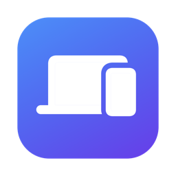

DeviceStats
Alle Statistiken deines Macs und deiner verbundenen Apple-Geräte in einer nativen macOS-App: iPhone, iPad, Apple Watch, AirPods, Magic-Zubehör, USB und Displays.
Dieser Mac
Chip, RAM-Auslastung, Speicher, Systemlast, Temperaturzustand und detaillierte Akkuwerte: Zyklen, Zustand, mAh, Spannung, Restlaufzeit.
iPhone, iPad & Watch
Modell, OS-Version, Verbindung per USB oder WLAN. Mit libimobiledevice zusätzlich Akku und Speicherbelegung.
AirPods & Bluetooth
Akku links, rechts und Case, Firmware, Modell und Signalstärke, dazu Magic Keyboard, Mouse und Trackpad.
Akkuverlauf
Diagramme über 6 Stunden bis 30 Tage, lokal gespeichert, plus Menüleisten-Icon mit allen Akkuständen.
Datenschutz
Seriennummern, Adressen und UDIDs werden auf Wunsch maskiert. Keine Daten verlassen deinen Mac.
JSON-Export
Alle Werte per ⌘E oder --dump als JSON exportieren, standardmäßig anonymisiert.
Selbst bauen
git clone https://github.com/mats623/DeviceStats.git cd DeviceStats ./scripts/build-app.sh open build/DeviceStats.app
Voraussetzungen: macOS 14+, Xcode (für iPhone/iPad/Watch über devicectl). Optional: brew install libimobiledevice.